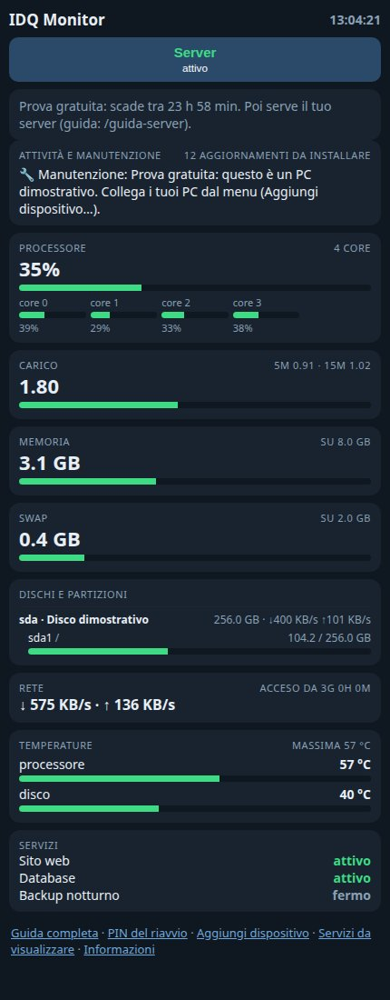
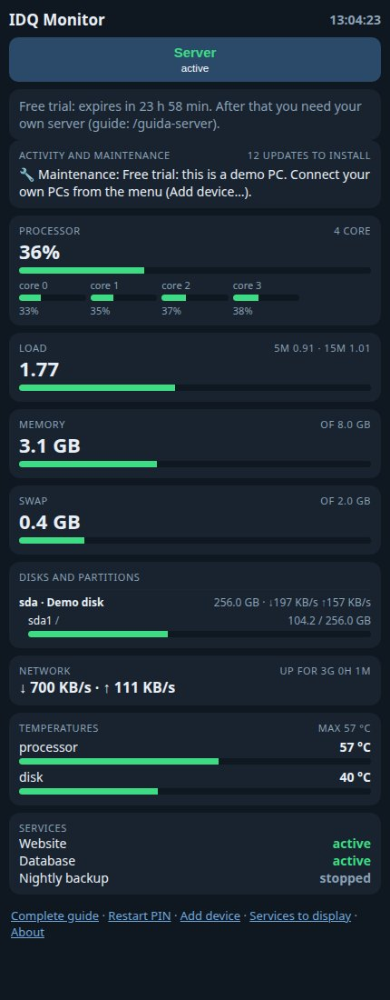
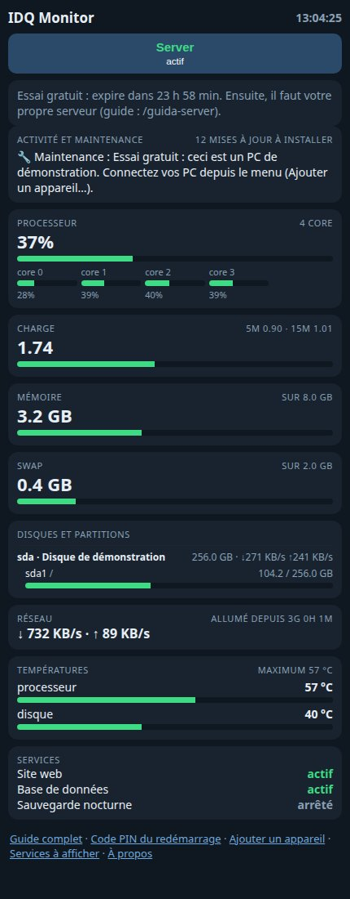
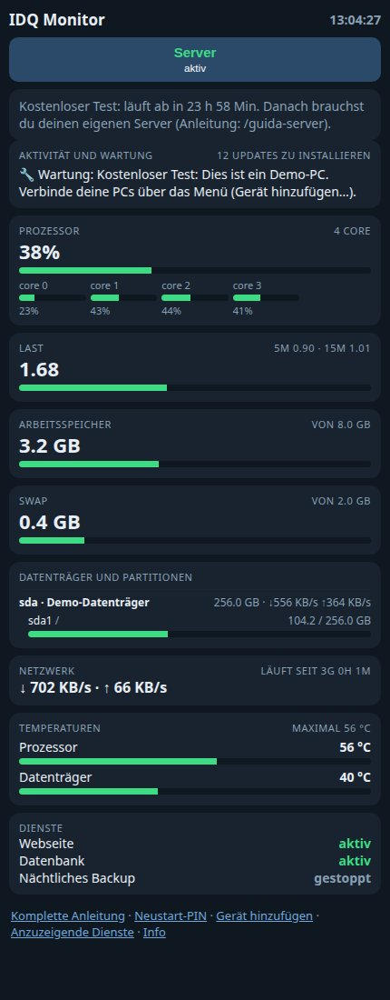
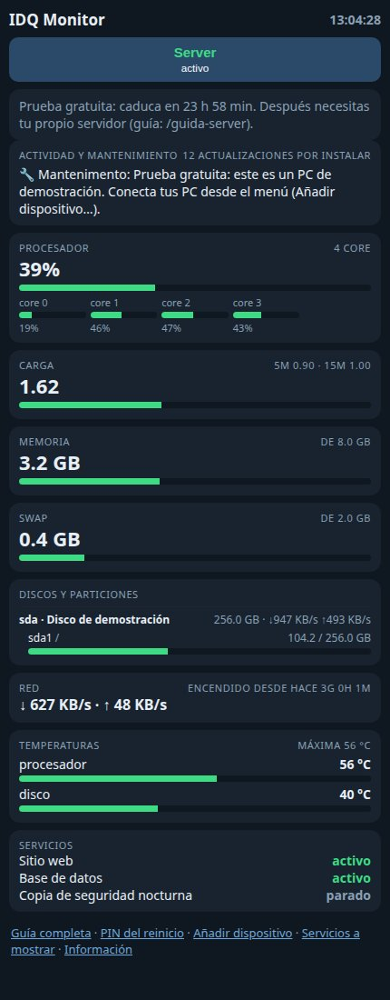

Cosa faWhat it doesCe qu'il faitWas es kannQué hace
Come appareWhat it looks likeÀ quoi ça ressembleSo sieht es ausAsí se ve





Versione web con il PC dimostrativo della prova gratuita; le app mostrano le stesse sezioni.Web version with the free trial's demo PC; the apps show the same sections.Version web avec le PC de démonstration de l'essai gratuit ; les applications affichent les mêmes sections.Webversion mit dem Demo-PC des kostenlosen Tests; die Apps zeigen dieselben Bereiche.Versión web con el PC de demostración de la prueba gratuita; las apps muestran las mismas secciones.
DownloadDownloadTéléchargementsDownloadsDescargas
Scegli il tuo sistema: il download parte subito.Choose your system: the download starts right away.Choisissez votre système : le téléchargement démarre tout de suite.Wähle dein System: Der Download startet sofort.Elige tu sistema: la descarga empieza enseguida. · VersioneVersionVersionVersionVersión 1.1
Note sull'installazioneInstallation notesNotes d'installationHinweise zur InstallationNotas de instalación
per Windowsfor Windowspour Windowsfür Windowspara Windows: Windows 10 o 11. Procedura guidata che installa anche l'agente, se vuoi. Windows può chiedere conferma (SmartScreen): scegli «Maggiori informazioni» e «Esegui comunque».Windows 10 or 11. A wizard that can also install the agent. Windows may ask for confirmation (SmartScreen): choose “More info” and “Run anyway”.Windows 10 ou 11. Assistant qui peut aussi installer l'agent. Windows peut demander une confirmation (SmartScreen) : choisissez « Informations complémentaires » puis « Exécuter quand même ».Windows 10 oder 11. Ein Assistent, der auf Wunsch auch den Agenten installiert. Windows fragt eventuell nach (SmartScreen): Wähle „Weitere Informationen“ und „Trotzdem ausführen“.Windows 10 u 11. Un asistente que también puede instalar el agente. Windows puede pedir confirmación (SmartScreen): elige «Más información» y «Ejecutar de todos modos».
per Linux (Ubuntu, Debian)for Linux (Ubuntu, Debian)pour Linux (Ubuntu, Debian)für Linux (Ubuntu, Debian)para Linux (Ubuntu, Debian): Installa con: sudo apt install ./nomefile.debInstall with: sudo apt install ./filename.debInstallez avec : sudo apt install ./nomfichier.debInstallieren mit: sudo apt install ./dateiname.debInstala con: sudo apt install ./archivo.deb
per Raspberry Pifor Raspberry Pipour Raspberry Pifür Raspberry Pipara Raspberry Pi: Con sistema a 64 bit: Pi 5, 4, 400, 3, 3+, Zero 2 W (controlla con uname -m: deve rispondere aarch64). Per Pi Zero, Pi 1 e Pi 2 con sistema a 32 bit usa il comando «Aggiungi dispositivo» dell'app.With a 64-bit system: Pi 5, 4, 400, 3, 3+, Zero 2 W (check with uname -m: it must answer aarch64). For Pi Zero, Pi 1 and Pi 2 with a 32-bit system use the app's “Add device” command.Avec un système 64 bits : Pi 5, 4, 400, 3, 3+, Zero 2 W (vérifiez avec uname -m : il doit répondre aarch64). Pour Pi Zero, Pi 1 et Pi 2 avec un système 32 bits, utilisez la commande « Ajouter un appareil » de l'application.Mit 64-Bit-System: Pi 5, 4, 400, 3, 3+, Zero 2 W (prüfe mit uname -m: Die Antwort muss aarch64 lauten). Für Pi Zero, Pi 1 und Pi 2 mit 32-Bit-System nutze den Befehl „Gerät hinzufügen“ der App.Con sistema de 64 bits: Pi 5, 4, 400, 3, 3+, Zero 2 W (comprueba con uname -m: debe responder aarch64). Para Pi Zero, Pi 1 y Pi 2 con sistema de 32 bits usa el comando «Añadir dispositivo» de la app.
Programma server (solo Linux e Raspberry Pi)Server program (Linux and Raspberry Pi only)Programme serveur (Linux et Raspberry Pi uniquement)Server-Programm (nur Linux und Raspberry Pi)Programa servidor (solo Linux y Raspberry Pi): Il programma del server funziona solo su Linux e Raspberry Pi (non su Windows). I computer Windows si possono comunque monitorare. Segui la guida passo passo.The server program runs on Linux and Raspberry Pi only (not on Windows). Windows computers can still be monitored. Follow the step-by-step guide.Le programme serveur fonctionne uniquement sous Linux et Raspberry Pi (pas sous Windows). Les ordinateurs Windows peuvent quand même être surveillés. Suivez le guide pas à pas.Das Server-Programm läuft nur unter Linux und Raspberry Pi (nicht unter Windows). Windows-Computer lassen sich trotzdem überwachen. Folge der Schritt-für-Schritt-Anleitung.El programa del servidor solo funciona en Linux y Raspberry Pi (no en Windows). Los ordenadores Windows sí se pueden monitorizar. Sigue la guía paso a paso.
Il tuo server, gratisYour own server, for freeVotre propre serveur, gratuitementDein eigener Server, kostenlosTu propio servidor, gratis
Ti basta un computer sempre acceso con Linux (anche un Raspberry Pi): circa 20 minuti e nessuna porta da aprire sul router.All you need is an always-on Linux computer (even a Raspberry Pi): about 20 minutes and no router ports to open.Il vous suffit d'un ordinateur Linux toujours allumé (même un Raspberry Pi) : environ 20 minutes et aucun port à ouvrir sur la box.Du brauchst nur einen ständig laufenden Linux-Computer (auch ein Raspberry Pi genügt): etwa 20 Minuten und keine Router-Ports zu öffnen.Solo necesitas un ordenador Linux siempre encendido (incluso una Raspberry Pi): unos 20 minutos y ningún puerto que abrir en el router.
IDQ Monitor User è gratuito. Se vuoi, fai una donazione: poi il download parte da solo. Oppure continua senza donare.IDQ Monitor User is free. If you like, make a donation: the download then starts by itself. Or continue without donating.IDQ Monitor User est gratuit. Si vous le souhaitez, faites un don : le téléchargement démarre ensuite tout seul. Ou continuez sans donner.IDQ Monitor User ist kostenlos. Wenn du magst, spende: danach startet der Download von selbst. Oder fahre ohne Spende fort.IDQ Monitor User es gratuito. Si quieres, haz una donación: después la descarga empieza sola. O continúa sin donar.
Dona conDonate withDonner avecSpenden mitDonar con PayPal Revolut
Sostieni il progettoSupport the projectSoutenez le projetUnterstütze das ProjektApoya el proyecto
IDQ Monitor User è gratuito. Se ti è utile, puoi offrire un contributo volontario.IDQ Monitor User is free. If it's useful to you, you can make a voluntary contribution.IDQ Monitor User est gratuit. S'il vous est utile, vous pouvez faire une contribution volontaire.IDQ Monitor User ist kostenlos. Wenn es dir nützt, kannst du freiwillig etwas beitragen.IDQ Monitor User es gratuito. Si te resulta útil, puedes hacer una contribución voluntaria.
DonaDonateFaire un donSpendenDonar
PayPal Revolut